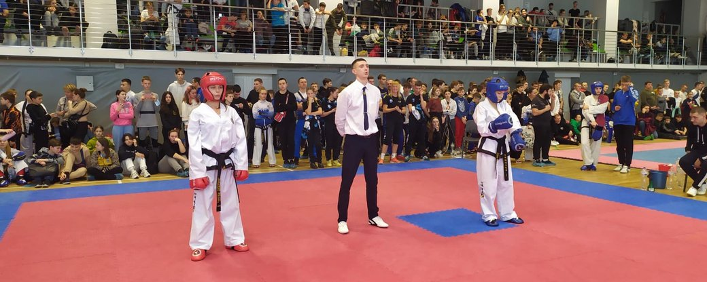
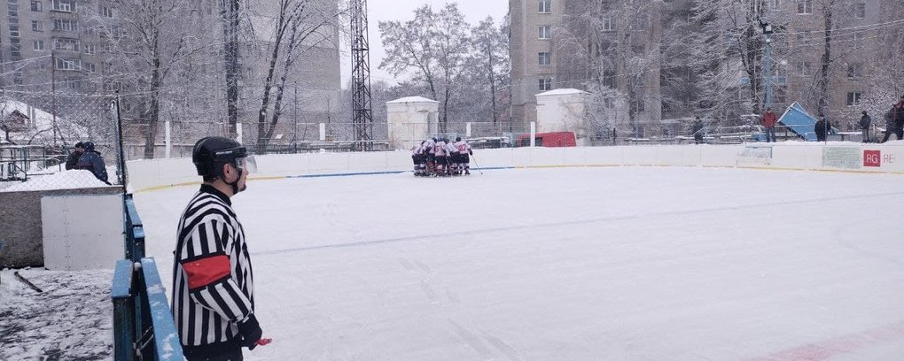
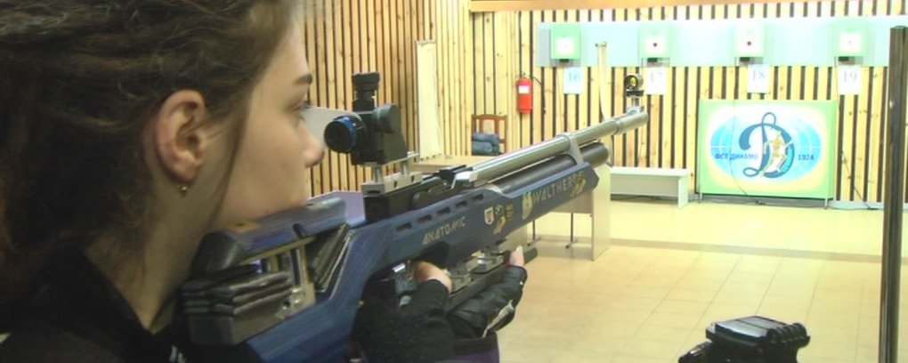
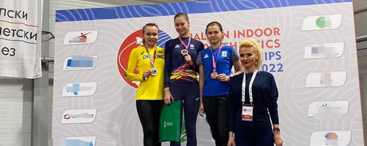

Прикарпатські спортсмени здобули 12 медалей на чемпіонаті України з таеквон-до ІТФ у Вінниці
Спортсмени з Прикарпаття завоювали 12 медалей на чемпіонаті України з таеквон-до ІТФ України серед дорослих, юніорів та дітей. Про це повідомили на Facebook-сторінці Івано-Франківської філії громадської організації "Федерація таеквон-до ІТФ України".
Змагання тривали з 10 до 13 лютого у Вінниці. За першість змагалися 700 спортсменів.
"10 вихованців Івано-Франківської філії таеквон-до ІТФ завоювали 12 медалей", — повідомляють у федерації.
Золото у тулях серед ветеранів здобула Наталя Яковишин. Серед дорослих три золоті медалі у тулях, спарингу та спецтехніці завоювала Дзвенислава Токарева. У цій віковій категорії вихованка дитячо-юнацької спортивної школи № 3 Софія Маковійчук здобула бронзу у спарингу.
Крім того, нагороди отримали ще п'ятеро спортсменів Івано-Франківської дитячо-юнацької спортивної школи № 3. Серед юначок золоту медаль у спарингу виборола Єва Дмитрув. Спортсменка також завоювала бронзу у тулях. Третє місце у спарингу серед юначок посіла Лукерія Пастух.
Вікторія Кардаш здобула срібло у спарингу серед юніорів. У цій категорії бронзу у спарингу та у тулях здобула й Карина Ткачук. Третє місце у спарингу серед юніорів посіла Марія Ворохіб.
За результатами чемпіонату і кубка України сформують національну збірну для участі в чемпіонаті Європи. Він проходитиме з 25 березня до 2 квітня у Хорватії.
Джерело: Суспільне
Глухівчанин Андрій Степанов став чемпіоном України з паверліфтингу
13 лютого в Коломиї стартував чемпіонат України з паверліфтингу. У перший день змагань глухівчанин Андрій Степанов у ваговій категорії 74 кілограми став чемпіоном України.
Сума переможця - 705 кг (270 кг присідання, 180 кг жим лежачи та 255 кг станова тяга). Андрій стає чемпіоном України другий рік поспіль. Чемпіонат є відбірковим на міжнародні змагання 2022-го року. Андрій виборов право представляти Україну на чемпіонаті Європи з паверліфтингу, який відбудеться 5-8 травня в Чехії.
Джерело: Суспільне
Визначилися команди, котрі продовжать боротьбу за медалі Сумського обласного хокейного чемпіонату
12 та 13 лютого стартувала серія плей-офф обласного хокейного чемпіонату. В одній четвертій фіналу грали вісім команд з Сум, Шостки, Дружби, Ромен, Білопілля, Конотопу та Коровинців.
У першому матчі 1/4-тої фіналу на майданчику стадіону Авангард зустрілись "Сумські Бобри" та хокейний клуб "Шостка". Сумчани відкрили рахунок у першому періоді – відзначився 22-гий номер сумчан Віталій Харченко. У другому періоді шосткинці зрівняли рахунок та вийшли уперед. Ще дві шайби хокеїсти "Шостки" забили у третьому періоді. У підсумку перемогу у першому чвертьфінальному матчі з рахунком 4:1 святкував хокейний клуб "Шостка", який і виборов першу путівку у півфінал чемпіонату області. Дві шайби у цьому матчі – переможну і останню – у ворота "Сумських бобрів" закинув Валентин Козіло.
"Програвали 1:0. Це засмутило нас трохи. Але потім зібралися. Плюс погодні умови – сніг. У нас команда молода, швидкісні більше. Але зі снігом трохи пригальмовували. Але нічого. Перемагає дружба", – розповів гравець ХК "Шостка" Валентин Козіло.
Задоволений після гри був і автор шайби "бобрів" у чвертьфінальному матчі Віталій Харченко: "Граємо для задоволення. У першу чергу хокей – це задоволення, це наше хобі. Мені сподобалася сьогоднішня гра".
У другому суботньому матчі зустрілись переможці груп "Південь" та "Північ". Хокейний клуб "Ромни" та хокейний клуб "Дружба" розіграли другу путівку у півфінал турніру.
У першому періоді хокеїсти "Дружби" закинули у ворота "Ромен" три шайби. У другому рахунок був вже 5:1 на користь команди з півночі. А матч у підсумку завершився з рахунком 7:3 на користь "Дружби".
13 лютого відбулися ще дві чвертьфінальні гри – білопільський "Лідер" грав з хокейним клубом "Конотоп", а "Суми" – з "Коровинцями". Конотопчани у овер-таймі перемогли команду з Білопілля (4:3), а "Суми" здолали "Коровиці" (6:1). Боротьбу за медалі у цю суботу продовжать хокейні клуби "Шостка", "Дружба", "Конотоп" та "Суми". Матч за третє місце та фінал відбудеться у неділю.
Джерело: Суспільне
Хмельницькі стрільці здобули загальнокомандну перемогу на чемпіонаті України
Спортсмени Хмельницького здобули перше загальнокомандне місце на відкритому зимовому чемпіонаті України серед дорослих з кульової стрільби. З 18 золотих медалей, які розігрувались на чемпіонаті, 14 завоювали хмельничани.
Про це повідомили у пресслужбі Хмельницької міської ради.
Змагання зі стрільби проходили у Львові з 8 по 13 лютого. У змаганнях взяли участь 153 учасники з 18 областей України.
"Хмельницький на цих змаганнях представляли: Заслужений майстер спорту України Андрій Гільченко та 5 майстрів спорту України міжнародного класу – Денис Баблюк, Ігор Кізима, Крістіна Гілевич, Анастасія Савельєва і Маргарита Тарканій, які змагались за нагороди у стрільбі з пневматичної гвинтівки з оптичним прицілом по рухомій мішені", - йдеться у повідомлені.
Додають, з 18 золотих медалей, які розігрувались на чемпіонаті, 14 завоювали наші земляки, а ще 4 срібні та 4 бронзові, що дало можливість з результатом 3130 балів впевнено отримати перше загальнокомандне місце.
"Збірна Вінницької області, якій пророкували перемогу у чемпіонаті, посіла друге місце, набравши на 1125 балів менше. Такого відриву переможця від другого призера на чемпіонатах України не було ще ніколи", - повідомили у міській раді.
За їхньою інформацією, в одні із вправ хмельничани встановили рекорд України.
Джерело: Суспільне
Волинянка стала бронзовою призеркою з легкої атлетики на змаганнях серед юніорів
Волинянка Юлія Петрик стала бронзовою призеркою на чемпіонаті Асоціації балканських легкоатлетичних федерацій з легкої атлетики серед юніорів, — повідомляють в управлінні молоді та спорту облдержадміністрації.
Змагання відбулися 12 лютого в місті Белград, у Сербії.
Спортсменка Юлія Петрик стала бронзовою призеркою на біговій дистанції 1 500 метрів з результатом 4:28.55.
Також дівчина виконала норматив на чемпіонат світу з легкої атлетики серед юніорів, який відбудеться цього року у серпні, в Колумбії.
Юлія Петрик вихованка Любешівської дитячо-юнацької спортивної школи.
Джерело: Суспілнье